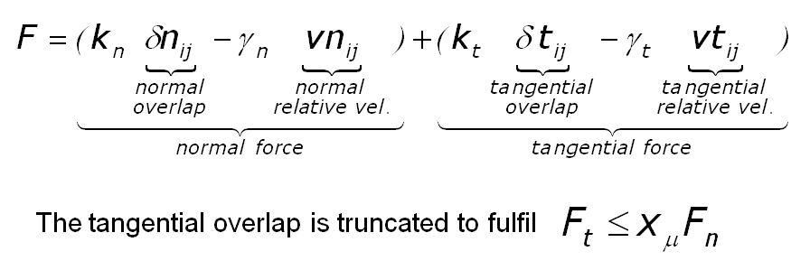
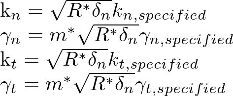

gran model hertz/stiffness¶
Syntax¶
model hertz [other model_type/model_name pairs as described here ] keyword values
zero or more keyword/value pairs may be appended
limitForce values = 'on' or 'off' on = ensures that the normal force is never attractive (an artefact that can occur at the end of a collision). off = standard implementation that might lead to attractive forces. tangential_damping values = 'on' or 'off' on = activates tangential damping off = no tangential damping
LIGGGHTS vs. LAMMPS Info:
This part of pair gran and fix wall/gran is not available in LAMMPS.
Description¶
This granular model uses the following formula for the frictional force between two granular particles, when the distance r between two particles of radii Ri and Rj is less than their contact distance d = Ri + Rj. There is no force between the particles when r > d:
In the first term is the normal force between the two particles and the second term is the tangential force. The normal force has 2 terms, a spring force and a damping force. The tangential force also has 2 terms: a shear force and a damping force. The shear force is a “history” effect that accounts for the tangential displacement (“tangential overlap”) between the particles for the duration of the time they are in contact. This term is controlled by the tangential model in action Keyword tangential_damping can be used to eliminate the second part of the force in tangential direction. The way how the Coulomb friction limit acts is also controlled by the tangential model chosen by the user.
The quantities in the equations are as follows:
delta_n = d - r = overlap distance of 2 particles
k_n = elastic constant for normal contact
k_t = elastic constant for tangential contact
gamma_n = viscoelastic damping constant for normal contact
gamma_t = viscoelastic damping constant for tangential contact
delta_t = tangential displacement vector between 2 spherical particles which is truncated to satisfy a frictional yield criterion
rmu = coefficient of rolling friction
contactradius = contact radius, equal to particle radius - 0.5 * delta_n
v_n = normal component of the relative velocity of the 2 particles
v_t = tangential component of the relative velocity of the 2 particles
w_r = relative rotational velocity of the 2 particles
The coefficients used for the force calculation in the hertz/stiffness model are linked to the specified values as follows:
To define those k_n_specified, k_t_specified, gamma_n_specified, and gamma_t_specified coefficients (material properties), it is mandatory to use multiple fix property/global commands:
fix id all property/global kn peratomtypepair n_atomtypes value_11 value_12 .. value_21 value_22 .. .
(value_ij=value for k_n between atom type i and j; n_atomtypes is the number of atom types you want to use in your simulation)
fix id all property/global kt peratomtypepair n_atomtypes value_11 value_12 .. value_21 value_22 .. .
(value_ij=value for k_t between atom type i and j; n_atomtypes is the number of atom types you want to use in your simulation)
fix id all property/global gamman peratomtypepair n_atomtypes value_11 value_12 .. value_21 value_22 .. .
(value_ij=value for gamma_n between atom type i and j; n_atomtypes is the number of atom types you want to use in your simulation)
fix id all property/global gammat peratomtypepair n_atomtypes value_11 value_12 .. value_21 value_22 .. .
(value_ij=value for gamma_t between atom type i and j; n_atomtypes is the number of atom types you want to use in your simulation)
Warning
You have to use atom styles beginning from 1, e.g. 1,2,3,…
The coefficient of friction cof is the upper limit of the tangential force through the Coulomb criterion Ft = cof*Fn, where Ft and Fn are the total tangential and normal force components in the formulas above. Thus in the Hookean case, the tangential force between 2 particles grows according to a tangential spring and dash-pot model until Ft/Fn = cof and is then held at Ft = Fn*cof until the particles lose contact. In the Hertzian case, a similar analogy holds, though the spring is no longer linear.
Force Limiting:
Note, that not using limitForce might lead to attractive forces between particles and walls, especially in case the coefficient of restitution is small. Be sure you include this key word for the pair style and the wall model if you like to avoid this.
Restrictions¶
If using SI units, youngsModulus must be > 5e6 If using CGS units, youngsModulus must be > 5e5 When using the limitForce, the specified coefficient of restitution is only approximate. This might become problematic for low coefficients of restitution as shown in Schwager and Poschel.
Default¶
tangential_damping = ‘on’ limitForce = ‘off’
(Di Renzo) Alberto Di Renzo, Francesco Paolo Di Maio, CES, 59 (3), p 525–541 (2004).
(Ai) Jun Ai, Jian-Fei Chen, J. Michael Rotter, Jin Y. Ooi, Powder Technology, 206 (3), p 269-282 (2011).
(Brilliantov) Brilliantov, Spahn, Hertzsch, Poschel, Phys Rev E, 53, p 5382-5392 (1996).
(Schwager) Schwager, Poschel, Gran Matt, 9, p 465-469 (2007).
(Silbert) Silbert, Ertas, Grest, Halsey, Levine, Plimpton, Phys Rev E, 64, p 051302 (2001).
(Zhang) Zhang and Makse, Phys Rev E, 72, p 011301 (2005).